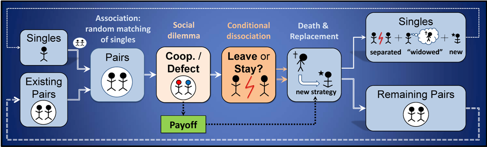

LeLeLe (LEave and LEt LEave)
Luis R. Izquierdo, Segismundo S. Izquierdo & Fernando Vega-Redondo
HOW TO INSTALL THE MODEL
To use LeLeLe, you will have to install NetLogo 5.3.1 (free and open source) and download the model itself. Unzip the downloaded file and click on LeLeLe.nlogo
OVERVIEW OF THE MODEL
LeLeLe (Leave and Let Leave) is a model designed to analyse the effect of conditional dissociation in the evolutionary emergence of cooperation. This section gives an informal and brief overview of LeLeLe. We use bold red italicised arial font to denote parameters (i.e. variables that can be set by the user).
In LeLeLe, there is a population of num-players players that may be randomly matched in couples (partnerships) to play a 2x2 symmetric game. The 2 possible actions players can take in the game are denoted C (for Cooperate) and D (for Defect). After each interaction, every individual is given the option to stay in her current partnership, or break it (thus getting a new randomly chosen mate for the next stage).
At each time-step, every individual has a fixed probability of dying; the expected number of time-steps each individual lives is exp-life. Whenever an individual dies, a new entrant comes in. In principle, new entrants adopt the strategy of an existing individual with probability proportional to her latest payoff, but mutations are also possible. Mutation occurs for each new entrant with probability prob-mutation, and when this occurs, the new entrant picks up a decision rule at random.
DESCRIPTION OF THE MODEL
This section explains the formal model that LeLeLe implements. The information provided here should suffice to re-implement the same formal model in any sophisticated enough modelling platform. The figure below provides an informal (and slightly simplified) sketch that illustrates the sequence of events within each time-step.

Sketch of the sequence of events within each time-step. For the sake of clarity in the illustration, it is assumed that every individual is paired, i.e. prob-rematch = 1.
The "Remaining Pairs" and "Singles" at the end of a time-step are identical to the "Existing Pairs" and "Singles" in the next time-step.
The game
Consider a population consisting of num-players number of individuals; some of the individuals are matched in pairs and some are single.
Each individual who is single at the beginning of the time-step is matched with probability prob-rematch; thus, an individual who is single at the beginning of the time-step stays single during the whole time-step with probability (1 - prob-rematch). In that case, the single individual receives a payoff out-payoff. (Naturally, an individual selected to be matched -with probability prob-rematch- may not be matched in the end if there is no other selected single individual available to be matched with.)
Consider now the individuals who are part of a pair; the pair could have been formed in a previous time-step or it may have been newly created in the current time-step by matching two singles. In any case, in each time-step, the two members of every pair play a symmetric 2x2 game once, where each of them can undertake one of two possible actions. These two possible actions are called C (for Cooperate) and D (for Defect). The action selected by each of the players determines the magnitude of the payoff that each of them receives in that time-step: CC-payoff, CD-payoff, DC-payoff, or DD-payoff, where AB-payoff denotes the payoff that an individual choosing action A obtains when her counterpart chooses action B.
After having decided to cooperate or not, both individuals simultaneously decide whether to stay with their current partner (S, for Stay), or break the partnership (L, for Leave). The Stay/Leave decision may be conditioned on the current partner's preceding action (C or D) -hence the name "conditional dissociation". If any one of the two individuals in a pair decides to leave, the partnership is broken and both individuals become single.
The strategies
Each individual carries three "genes" that shape her behaviour.
- The first gene determines the individual's action, C or D. A certain individual always takes the same action.
- The second gene determines what to do after the interaction in case one's partner has played C. The options are: S or L, where S stands for the decision to Stay with one's current partner and L stands for the decision to Leave one's current partner.
- Finally, the third gene determines the choice - also S or L - after one's current partner has just played D.
A strategy thus specifies a course of action at every possible juncture in an individual's life. We permit the 8 possible strategies or decision rules. Hence, there are (8·8+8)/2 = 36 strategy pairs.
The time line
The population process advances in discrete time-steps t = 1, 2, 3,... which are called "ticks" in the interface of the model. In each time-step, the following events occur in sequence (see Figure above):
- Random matching of singles. At the beginning of each time-step, each single individual is considered to be matched with independent probability prob-rematch. Selected singles are randomly matched in pairs (partnerships), with all matches being equally likely. If the number is odd, one randomly chosen individual is left single. The singles who have not been selected (an event that occurs with probability (1 - prob-rematch) for each single individual) stay single for the rest of the time-step. Note that at the beginning of the very first time-step all individuals are single.
- Payoffs. Individuals who remain single throughout the time-step get a payoff equal to out-payoff. All pairs play the 2x2 symmetric game described above once. Each individual's action (C or D) is determined by her decision rule (in particular, by her first gene).
- Conditional dissociation. Every individual involved in a partnership decides whether to leave or stay, according to her decision rule. Individuals involved in partnerships that are broken join the pool of singles entering the next time-step.
- Death. Individuals randomly die, an event that occurs independently for each individual with probability p in each time-step. Hence, the lifespan of an individual is geometrically distributed with mean-value exp-life = 1/p. The death of an individual involved in a partnership renders her partner single, so those individuals whose partner died also join the pool of singles entering the next time-step.
- Replacement. Each dead individual is immediately replaced by a new entrant. This keeps the population size constant across all time-steps. These new entrants copy independently the decision rules of individuals in the population that started the current time-step; the probability that any particular individual's decision rule will be copied is proportional to the individual's payoff in the current time-step. Thus, only individuals who existed at the beginning of this time-step can be copied (and all of them may be copied, even if they have died in this time-step). This copying is subject to random mutation, which occurs with a constant probability prob-mutation. In this event, the new entrant instead picks up a decision rule at random, with equal probability for all 8 decision rules. New entrants are also added to the pool of singles entering the next time-step. Thus, the pool of singles entering the following time-step will be composed of individuals who have been single all throughout the time-step, new entrants (imitators and mutants), separated individuals from broken pairs, and "widowed" individuals (those whose partner died).
The mean dynamics approximation
The applet also computes and displays the expected motion of the agent-based model described above. The expected motion is sometimes called the mean dynamics or the mean field of the original model, and is expected to be a good approximation of the stochastic evolution of the agent-based model described above, when the population is large.
In essence, the mean dynamics system invokes a repeated use of the law of large numbers to identify the following magnitudes:
- ex ante matching probabilities and ex post frequencies at the pairing stage,
- expected number of deaths and average number of deaths for each group of strategists,
- ex ante mutation probabilities and ex post frequencies.
Such an identification of probabilities and frequencies leads to a deterministic set of equations that provides the mean dynamics of the stochastic agent-based model described above. The behaviour of this set of deterministic equations can be taken to approximate the behavior of the stochastic process described above if the population is large.
HOW TO USE IT
Payoffs
- CC-payoff: Payoff obtained by a player who cooperates when the other player cooperates too.
- CD-payoff: Payoff obtained by a player who cooperates when the other player defects.
- DC-payoff: Payoff obtained by a player who defects when the other player cooperates.
- DD-payoff: Payoff obtained by a player who defects when the other player also defects.
- out-payoff: Payoff obtained by a player who stays single throughout the time-step.
Population parameters
- num-players: Number of players in the population
- initial-strategy: Initial strategy for the population. It can be any of the 8 strategies for the whole population, or "random".
- If random is selected, each player takes one of the 8 possible strategies with equal probability.
- Otherwise, every player in the population adopts the selected strategy. We use the notation X1-X2-X3, where X1 ∈ {C, D} is the action to take with a new partner, X2 ∈ {S, L} is the action to take if one's current partner cooperated, and X3 ∈ {S, L} is the action to take if one's current partner defected. For instance, C-S-L is the strategy that always cooperates, stays (and cooperates) if the current partner cooperated in the previous interaction, and leaves if the partner defected in the previous interaction.
- expected-life: Expected life of every player in the population. This actually sets the probability of death at every time-step to the value (1/exp-life).
- prob-mutation: Probability with which a new entrant adopts a random strategy.
- prob-rematch: Probability with which each single individual at the beginning of the time-step is selected to be rematched.
Buttons
- Setup: Creates a new population of num-players players using the corresponding initial-strategies.
- Go once: Pressing this button will run the model one time-step only.
- Go: Pressing this button will run the model until this same button is pressed again.
Definition of regimes
The model can track the number of time-steps that the system has been in one of two possible regimes and the number of transitions in between these two regimes. The regimes are called cc-regime and dd-regime. At any given time-step:
- The system is said to be at the cc-regime if and only if the fraction of CC outcomes is contained in the interval [cc-lower-limit , cc-upper-limit].
- The system is said to be at the dd-regime if and only if the fraction of DD outcomes is contained in the interval [dd-lower-limit , dd-upper-limit].
The tracking is done from the tick track-regimes-from-tick.
MONITORS AND PLOTS
Monitors
- ticks: Number of time-steps that have gone by.
- % players in CC: Percentage of players involved in partnerships where both players cooperated in the current time-step.
- % players in CD: Percentage of players involved in partnerships where one player cooperated and the other player defected in the current time-step.
- % players in DD: Percentage of players involved in partnerships where both players defected in the current time-step.
- % players in CC (md): Percentage of players involved in partnerships where both players cooperated in the current time-step in the Mean Dynamics approximation.
- % players in CD (md): Percentage of players involved in partnerships where one player cooperated and the other player defected in the current time-step in the Mean Dynamics approximation.
- % players in DD (md): Percentage of players involved in partnerships where both players defected in the current time-step in the Mean Dynamics approximation.
- cc-regime: Number of time-steps that the system has been in the cc-regime.
- cc to dd ->: Number of transitions from the cc-regime to the dd-regime.
- <- dd to cc: Number of transitions from the dd-regime to the cc-regime.
- dd-regime: Number of time-steps that the system has been in the dd-regime.
- %-CC: Percentage of couples where both players cooperated in the current time-step.
- %-CD: Percentage of couples where one player cooperated and the other player defected in the current time-step.
- %-DD: Percentage of couples where both players defected in the current time-step.
Plots
Importantly, all plots refer to the situation before any player dies and is replaced.
- Players: Time series of the number of players who are single, and the number of players who are involved in each type of partnership (CC, CD or DD).
- Players (Mean Dynamics): Time series of the proportion of players who are single, and the number of players who are involved in each type of partnership (CC, CD or DD) in the Mean Dynamics approximation.
- Strategy Distribution: Time series of the distribution of strategies in the whole population.
- Strategy Distribution (Mean Dynamics): Time series of the distribution of strategies in the whole population in the Mean Dynamics approximation.
- Players' pairs: Time series with the number of players who started the time-step being single (series named "singles before matching"), the number of players who were part of a pair during the time-step (series named "in pairs after matching") and the number of players who remained single all through the time-step (series named "singles after matching").
- Players' pairs (Mean Dynamics): Time series with the proportion of players who started the time-step being single (series named "singles before matching"), the proportion of players who were part of a pair during the time-step (series named "in pairs after matching") and the proportion of players who remained single all through the time-step (series named "singles after matching") in the Mean Dynamics approximation.
LICENCE
LeLeLe is a model designed to analyse the effect of conditional dissociation in the evolutionary emergence of cooperation.
Copyright (C) 2013 Segismundo S. Izquierdo & Luis R. Izquierdo
This program is free software; you can redistribute it and/or modify it under the terms of the GNU General Public License as published by the Free Software Foundation; either version 3 of the License, or (at your option) any later version.
This program is distributed in the hope that it will be useful, but WITHOUT ANY WARRANTY; without even the implied warranty of MERCHANTABILITY or FITNESS FOR A PARTICULAR PURPOSE. See the GNU General Public License for more details.
You can download a copy of the GNU General Public License by clicking here; you can also get a printed copy writing to the Free Software Foundation, Inc., 51 Franklin Street, Fifth Floor, Boston, MA 02110-1301, USA.
Contact information:
Luis R. Izquierdo
University of Burgos, Spain.
e-mail: lrizquierdo@ubu.es
MODELLERS
This program has been designed and implemented by Segismundo S. Izquierdo & Luis R. Izquierdo.